Welcome,
Enter through the open corrugated gate next to the bamboo bush.
altar space's red metal doors will be directly in sight.
altar space's red metal doors will be directly in sight.
See you soon.
 






